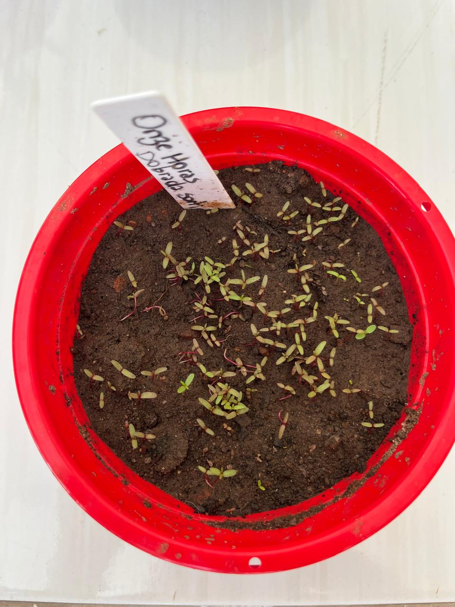

🔴 Identificação da Planta
Nome científico: Portulaca grandiflora
Família botânica: Portulacaceae
Origem: América do Sul
Vaso na Horta Escolar Viva: 🔴 Vermelho
🌿 Características
A Onze Horas é uma planta ornamental muito conhecida por suas flores coloridas e delicadas. Recebe esse nome porque geralmente abre suas flores com maior intensidade nas horas de maior luminosidade do dia.
É uma planta resistente, alegre e muito utilizada em jardins sustentáveis por se adaptar bem ao calor e necessitar de poucos cuidados.
☀️ Como Cultivar
A Onze Horas é uma planta de fácil cultivo e se desenvolve muito bem em locais ensolarados, sendo uma ótima opção para vasos e jardins escolares.
- ☀️ Gosta de bastante luz solar.
- 💧 Necessita de pouca água, evitando excesso de umidade.
- 🌱 Prefere solo leve e bem drenado.
- 🌿 É resistente ao calor e adequada para jardins sustentáveis.
🐝 Importância para a Biodiversidade
Suas flores coloridas podem atrair pequenos polinizadores, como abelhas e borboletas, contribuindo para um ambiente mais vivo e equilibrado.
Na Horta Escolar Viva, a Onze Horas representa a beleza da diversidade das flores e a importância de cuidar da natureza.
🌼 Você Sabia?
A Onze Horas costuma abrir suas flores durante o período de maior presença do sol, criando um espetáculo de cores no jardim.
📱 Conheça mais sobre a Onze Horas
Aponte a câmera do celular para acessar mais informações sobre esta flor.